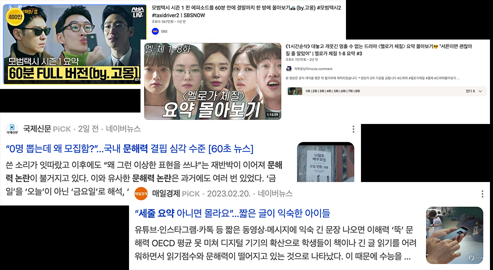
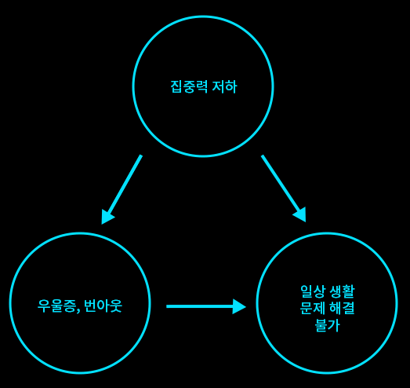
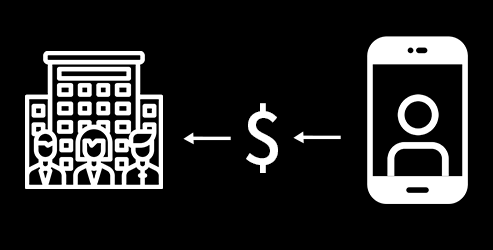
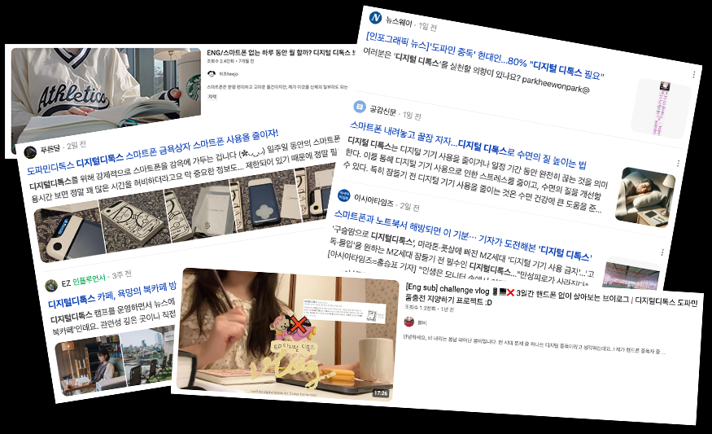

집중력 저하,
온전히 내 탓일까?
집중력을 훔쳐가는
사회 시스템
숏폼 콘텐츠 중독
"5분만 보려 했는데 새벽"...오늘도 '쇼츠지옥'에 빠졌다
숏폼에 도둑맞은 집중력, '도파민 중독'일까?
틱톡을 시작으로 유튜브에서는 숏츠, 인스타그램에서는 릴스가 등장하며 숏폼 콘텐츠의 인기가 높아지고 있다. 숏폼 콘텐츠는 1분 정도의 짧은 시간 안에 핵심 내용만 전달하는 영상이다. 이는 빠른 시간 안에 뇌에 강한 자극을 주기에 주로 브랜드 홍보에 많이 쓰인다. 유튜브에서는 숏츠를 통해 정보를 전달하는 유튜버들이 많아졌고, 인스타그램에서는 다양한 '챌린지'릴스가 유행하며 '챌린지' 문화가 생겨났다. 이러한 흐름에 따라 숏폼 콘텐츠의 길이는 점점 더 짧아지고 자극의 깊이는 더욱 깊어졌다. 이 때문에 숏폼에 중독되는 사람들이 많아졌다. 짧은 영상이라 콘텐츠를 보는 데 시간을 많이 쓰지 않았다는 착각에 빠져 장시간 동안 숏폼 콘텐츠를 시청하게 되면서 숏폼에 중독되게 된 것이다.
요약 콘텐츠 유행과 문해력 논란

최근 유튜브에서는 영화나 드라마의 내용을 짧게 요약한 영상을 올리는 유튜버들이 인기를 얻고 있다.
사람들은 2시간 이상 가만히 앉아 있어야 하는 영화관에 가기보다 언제든 멈출 수 있고 앞당겨 볼 수 있는
OTT 플랫폼을 더 많이 찾고 유튜버들의 10분 요약 영상을 찾아본다. 드라마는 요약 클립으로 보고 심지어 소설책도
1분 요약 영상으로 본다.
이러한 영향으로 인한 문해력 저하 사례도 증가하고 있다. 상식적인 수준의 단어도 해석하지 못하는가 하면,
긴 글만 봐도 세 줄 요약을 요청하는 하는 등 무언가에 대해 집중해 보고 깊이 생각해 보려는 노력을 하지 않는다.
문제와 원인 02.
집중력 저하가 왜 문제일까?
악순환에 빠진다
집중력 저하는 일상생활의 문제들을 해결하지 못하게 만들어 우울증과 번아웃에 고통받게 만든다. 일상에서는 인간관계에서 문제가 생기기도 하고 과제나 업무와 같이 해야 하는 일들도 많다. 최근에는 경제 상황도 좋지 않아서 미래를 그려나가는 것에 대한 부담도 커지고 있다. 사람들은 이러한 문제상황에서 벗어나고자 집중을 다른 곳으로 돌린다. SNS를 보거나 하루 종일 TV를 보거나 하는 등 일상으로부터 멀어지려고 한다. 하지만, 이는 그저 도피일 뿐, 일상의 문제를 해결해 주지는 않는다. 아무것도 해결되지 않은 채 다시 일상으로 돌아오면 무력감에 사로잡혀 버린다. 아무것도 해낸 것이 없는 자신을 탓하면서 우울증과 번아웃에 빠지는 것이다. 우울증과 번아웃에 빠지게 되면 계속해서 집중력이 저하되고 일상생활로 돌아오기 힘들어지는 악순환에 빠지게 된다.
집중력 저하는 개인의 탓이 아니다

집중력을 훔쳐가는 사회 시스템
구글의 디자인 윤리학자 '트리스탄 해리스'는 소수의 인터넷 기업들이 매일 수십억 명의 마음을 조종하고 있다며 지금의 사회 시스템이 사람들을 소셜미디어에 빠지게 만든다고 말한다. 소셜미디어 산업과 같은 디지털 관련 산업들은 사람들이 가능한 오랜 시간 동안 디지털 기기를 이용해야만 수익을 얻을 수 있는 구조를 가진다. 이렇게 거대한 사회 시스템이 우리의 일상을 둘러싸고 있기 때문에 우리의 집중력이 저하되는 현상을 쉽게 막을 수 없는 것이다.
해결 방안 03.
디지털 디톡스 챌린지가 도움이 되지 않을까?

최근 집중력 저하를 막기 위한 '디지털 디톡스', '도파민 디톡스' 챌린지가 유행하고 있다. 스마트폰 보관 상자를 사서 일정 시간 동안
스마트폰을 강제적으로 사용하지 않는 것부터 스마트폰을 방해 금지 모드로 두고 일부러 독서실에 가거나 여행을 떠나는 등 어떻게 해서든
디지털로부터 멀어지려고 한다. 이러한 챌린지가 실제로 도움이 되기도 하지만, 지속적이지는 못한다.
'도둑맞은 집중력'의 저자 '요한 하리'도 인터넷이 되지 않는 구형 휴대폰을 들고 어떠한 디지털 기기 없이 여행을 떠났지만 스마트폰으로 무언가를
하고 싶다는 생각을 끊을 수 없었고 챌린지 기간이 끝나고 나서는 다시 스마트폰을 사용할 수밖에 없었다고 말한다. 이처럼 스마트폰을 완전히 사용하지 않거나 강박적으로
사용 시간을 줄이려는 것은 도움이 되지 않는다.
내재적 동기가 필요하다
"리노어는 네 번째 요인이 작용하고 있다고 믿는다. 이를 이해하려면 뉴욕 북부의 로체스터에서 인터뷰한 심리학 교수인 에드 테시와, 역시 나와 대화를 나눈 그의 동료 리어드 라이언의 발견을 이해해야 한다. 이들의 연구는 모든 인간의 내면에 자기 행동의 이유가 되는 두 가지 동기가 있음을 밝혀냈다. 여러분이 평소에 달리기를 한다고 상상해 보자. 아침에 달리기를 하는 이유가 그 느낌(머리카락을 흩날리는 바람, 몸이 힘 있게 박차고 나아가는 감각)이 좋아서라면 그건 '내재적' 동기다. 그 밖에 다른 보상을 얻기 위해 달리는 것이 아니다. 그저 달리는 것이 좋기 때문에 달리는 것이다. 이제 그저 좋아서가 아니라 아침에 일어나 함께 달릴 것을 강요하는 훈련 교관 같은 아버지 때문에 달리기를 한다고 상상해 보자. 또는 인스타그램에 상체를 탈의한 영상을 올리기 위해, '하트'와 '이야, 완전 섹시한데'라는 댓글에 중독되었기 때문에 달리기를 한다고 상상해 보자. 그것은 달리기의 '외재적' 동기다. 이때 달리는 것은 달리기 자체가 즐거움이나 성취감을 줘서가 아니라 그래야 하기 때문이거나 그 밖의 다른 보상을 얻고 싶기 때문이다."
'요한 하리'는 사회 시스템이 집중력을 빼앗아 가는 현대 사회에서 우리가 일상생활에 쓸 집중력을 회복하기 위해서는 내재적 동기가 필요하다고 말한다. 외부적 요인이 아닌 '나 자신이 진정으로 하고 싶어 하는 것'을 찾으면 자연스럽게 그 일에 몰두하게 되면서 집중력을 잃게 만드는 사회 시스템으로부터 멀어질 수 있다고 한다. 다른 사람이 좋아하고 재밌어하는 일이 아닌 온전히 내가 좋아하고 재밌어하는 일을 해야 자신의 삶의 가치를 찾고 '나'의 삶에 더 집중하여 행복해질 수 있다는 것이다.
사회 현상 01.